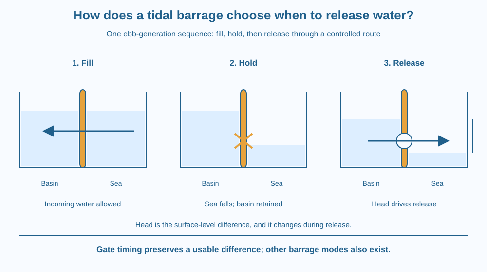

Explain how a tidal barrage uses the timing of water-level differences. Follow an ebb-generation example from basin filling to holding and controlled release. Focus on stored head and scheduling, rather than repeating why tides exist or how an electrical generator works.
Suppose a coastal basin is separated from the sea by a barrier with controlled openings. The sea level rises and falls, but a useful release does not mean leaving every opening wide all the time.
If the water levels on both sides continually equalise, little useful difference remains across the barrier. Holding water while the outside level changes can create a difference that a controlled flow can exploit.
The interesting question is when to connect the basin to the sea and when to hold it apart. Timing can be as important as the barrier itself.
A tidal barrage is a barrier across a suitable tidal inlet or basin. Openings and turbine passages allow control of exchange between basin and sea. We take the changing tide as an input rather than re-explaining its astronomical origin.
The vertical difference between the basin water surface and the sea surface is a form of head. A larger usable head generally offers more energy per unit mass of water passing through an appropriate route, though a real installation has many constraints.
In one simplified ebb-generation cycle, openings allow the basin to fill as the tide rises. Around the high-water part of the cycle, control gates can hold water in the basin while the sea outside starts falling.
As the sea falls, the retained basin surface stands higher. Once a useful level difference exists, controlled release through the turbine route allows water to move from the higher basin toward the lower sea. Energy is extracted from that flow.
As release proceeds, the basin level changes too. The head is therefore not a fixed number throughout the generating period. Continuing sea-level change, basin area, gate settings and the rate of release all affect the evolving difference.
Useful power depends on both head and flow rate, along with conversion losses and equipment limits. A large flow with almost no head is not equivalent to the same flow under a substantial usable head. Opening everything instantly is not automatically the best schedule.
When head becomes too small for the intended operating mode, generation can stop and the system prepares for another part of the cycle. The exact operating thresholds depend on the design; this lesson invents no universal water-level trigger or release duration.
Some barrage systems can generate during incoming flow or in both directions. The example here is deliberately one ebb-oriented operating sequence, not a claim that all real tidal facilities use an identical schedule.
A barrage differs from a free-standing tidal-stream turbine. It controls water exchange and the basin level to use a head difference. Its effect on an inlet also raises questions about sediment, habitats, navigation and other water uses that cannot be settled by an energy sketch alone.
Draw three snapshots of the same basin and sea. First, show filling with similar high levels. Second, close the ordinary exchange route and let the sea surface fall while the basin remains comparatively high.
Third, open a controlled release route with an arrow through the energy-extraction passage. Mark head as the difference between the two water surfaces, not as the depth below the seabed.
Use the same basin outline in every snapshot. Changing both the shape and the tide would make the sequence harder to interpret. The model shows timing and relative levels without assigning real engineering dimensions or a guaranteed output.
The SVG uses three panels: fill, hold and release. Separate horizontal water surfaces indicate the basin and sea levels in each stage. A vertical bracket identifies the usable head during the release example.
Gate symbols distinguish a connected route from a held boundary. The release arrow passes through the simplified turbine passage, while captions state that head changes during operation.
The graphic is not a dam-construction plan. It does not show generator windings or orbital forces because those are not the new mechanism being explained. Its labels describe one ebb-generation sequence with qualitative levels.

India has coastal regions where students may discuss tidal-energy possibilities. A suitable project would need detailed local records, tidal range, basin geometry and assessments of existing uses. The presence of a coast alone does not establish that a barrage is appropriate.
Water-level timing is also familiar from controlled irrigation storage, but the sea boundary in this lesson changes through a tidal cycle. A barrage schedule must respond to both sides of the barrier.
Students should work from diagrams rather than visiting gates, embankments or fast-flowing tidal channels. No model involving deep water or a constructed barrier is needed for the paper timing activity.
Use paper and a pencil to make three side-by-side basin sketches.
Keep all levels qualitative and clearly label basin and sea. Ask a partner what would happen to the stored difference if an unrestricted opening kept both surfaces equal. This tests the role of timing without prescribing an operating schedule for a real installation.
Why might waiting create more usable head but also change the available flow and time remaining in a cycle? The decision involves a changing system rather than one permanently favourable level difference.
Now imagine a drawing that marks head from the basin surface to the bottom of the sea. What is wrong with that definition here? Explain why the relevant comparison is between the two water surfaces across the controlled route.
What is head in the simplified barrage model?
Answer: B — The water-surface difference across the controlled route supplies the relevant head.
Why hold basin water while the outside tide falls?
Answer: A — Retaining water while the sea falls can create head for a later controlled release.
An unrestricted opening keeps both surfaces nearly equal. What is the consequence?
Answer: C — Continuous equalisation prevents a substantial retained surface-level difference in this comparison.
Create a gate-timing storyboard for the simplified ebb-generation case. Include filling, holding, useful head, controlled release and a condition for stopping that release.
State two additional questions a real proposal would need to answer, such as sediment movement or navigation. Do not invent a power rating, site approval or threshold. Your design argument must show how timing creates an opportunity without claiming that every coastline supplies the same one.
A barrier can gain usefulness by temporarily preventing a flow rather than maximising flow at every instant. Holding water allows the changing sea boundary to create a later difference. The engineering value lies in the sequence of connection and separation, not simply in making the largest opening possible.
In an ebb-generation barrage model, filling, holding and controlled release create and use a changing basin-to-sea head; timing and flow together shape the opportunity.